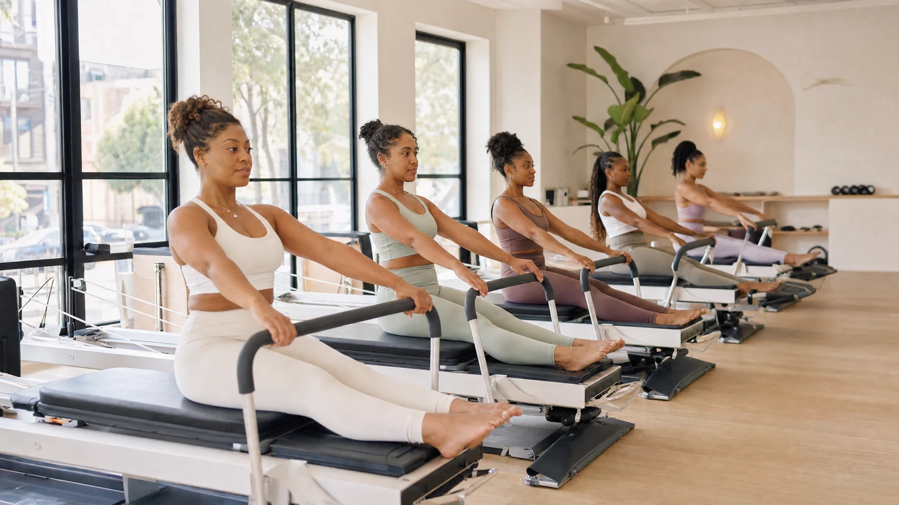
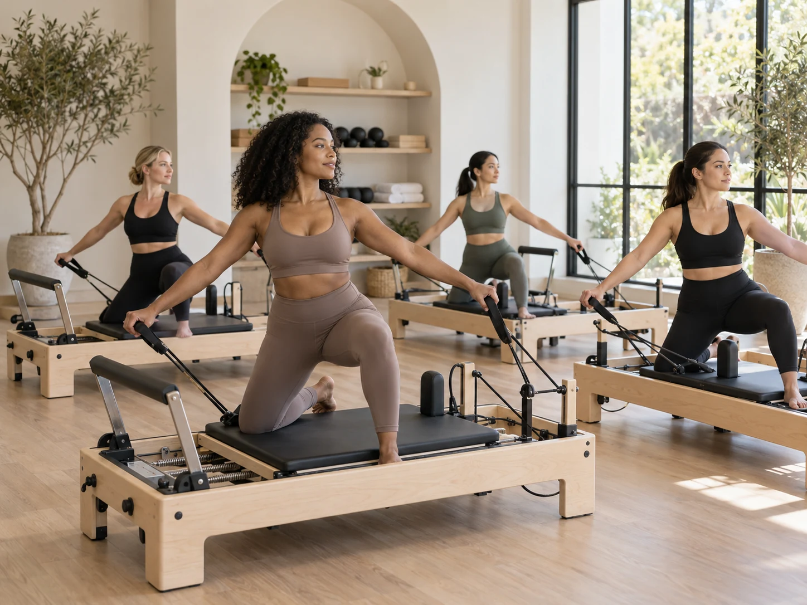

Boredom does not always mean the routine is bad
Sometimes a routine is working, but your brain is tired of the same setting, playlist, order, or time of day. Before replacing everything, change one variable and see if your interest comes back.
You might keep the same strength program but move one session outside, take one Pilates class, or switch the order of your training days.
Try a skill based workout
Learning something gives your brain a new problem to solve. Pilates, boxing, dance, climbing, swimming, tennis, and martial arts can all feel more engaging because progress is not measured only by calories or weight.
A skill gives you a reason to notice technique and improvement instead of simply surviving the session.

Use a short experiment
Pick something new for four weeks instead of declaring that you found your forever routine. Try three Pilates classes a week, train for a 5K, take beginner dance, or follow a simple strength plan.
A defined experiment feels more interesting because there is a beginning and an end, and you can evaluate what you liked afterward.
Bring someone into it
A friend can make a familiar workout feel completely different. You can take turns choosing classes, plan a weekly walk, or create a shared goal that gives you a reason to show up.
Just make sure the plan still works when the other person is busy. Your routine should not disappear because someone canceled.
Keep the parts that already work
You do not need novelty in every session. Keep the movements that make you feel strong and the schedule that fits your life, then add enough newness to make the week feel interesting again.
The goal is not entertainment every minute. The goal is a routine you want to return to.